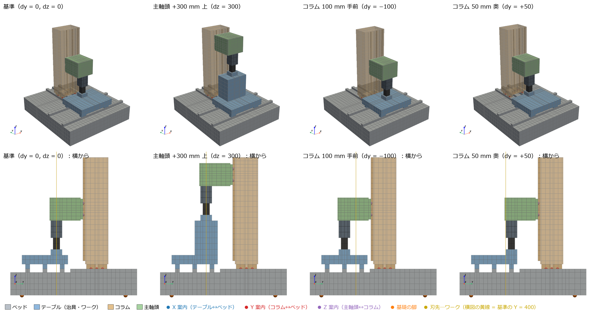
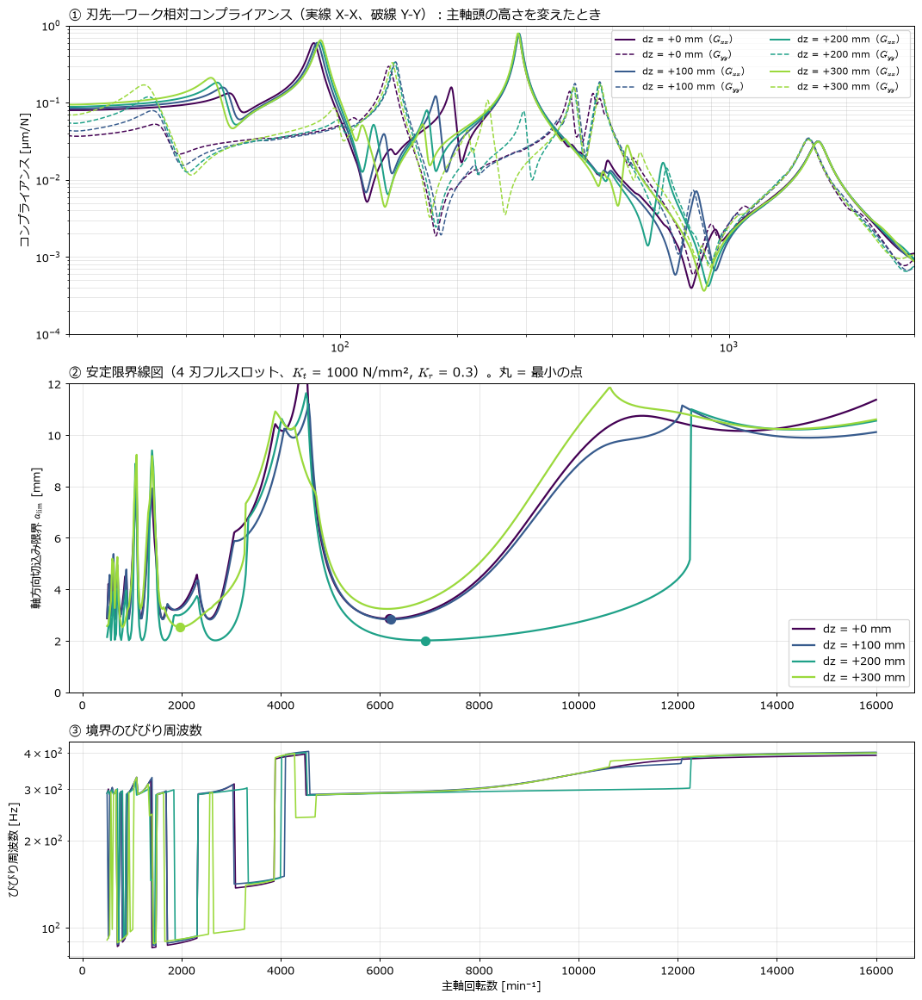
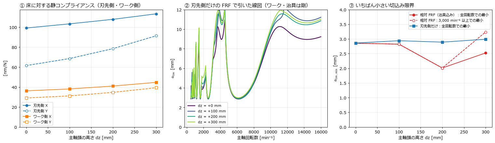
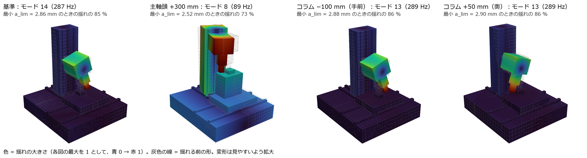
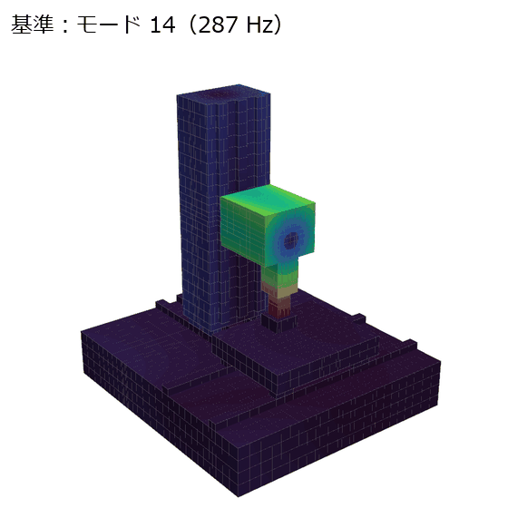
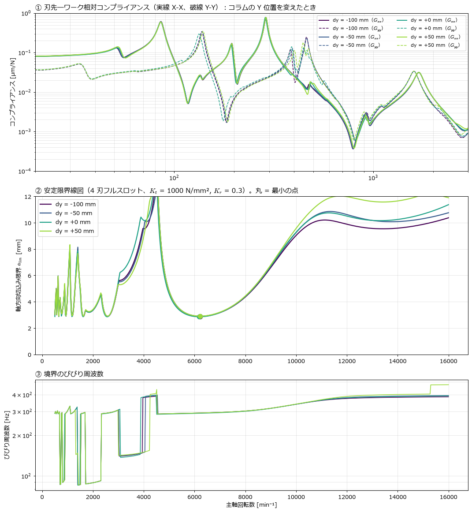
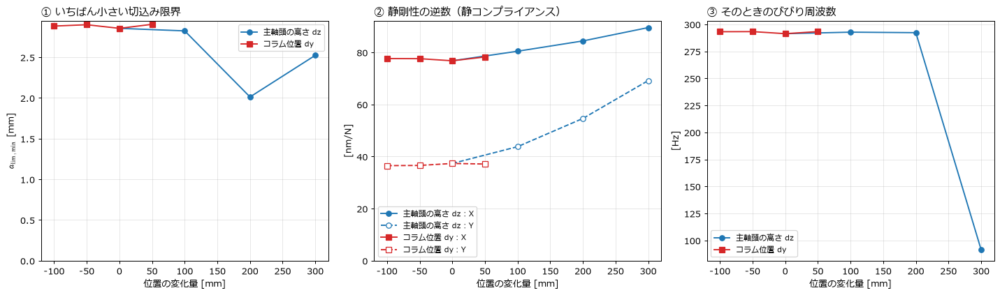

← docs 目次 ｜ ⌂ トップ ｜ ← 前: ana005_基礎ばねモデルの加減速と再生びびり分析
作成: 2026-11-08。入力・計算コード・結果：ana006_spindle_column_position。前提の理論（相対 FRF、安定限界、モードの割合）は ana005 の 5 章と同じです。
立型マシニングセンタで、次の 2 つの位置を変えると刃先とワークの間のびびりやすさがどう変わるかを調べました。
ana005 では主軸頭をコラムと一体のメッシュにしていたため、位置を動かせませんでした。今回はベッド・テーブル・コラム・主軸頭を別々の部品にし、部品どうしを案内（リニアガイドとボールねじ）のばねでつなぎました。こうすると、部品の位置をパラメータとして動かすだけでモデルを作り直せます。
結論は次の 3 つです。

上段は斜めから、下段は横（+X 側）から見た図です。左から、基準、主軸頭 +300 mm、コラム 100 mm 手前、コラム 50 mm 奥です。点は接合面の代表点で、青は X 案内、赤は Y 案内、紫は Z 案内、橙は基礎の脚を表します。
| 部品 | 動かし方 | 下の部品とのつなぎ | ばね（キャリッジ 1 個あたり） |
|---|---|---|---|
| ベッド | 動かない | 基礎の脚 4 か所 → 地面 | 水平 10 N/µm、鉛直 100 N/µm |
| テーブル（治具・ワーク） | X は中央で固定 | X 案内：キャリッジ 4 個＋ナット | ラジアル 800、横 560、ねじ軸方向 200 N/µm |
| コラム | Y に $ | Y 案内（ベッド上）：キャリッジ 4 個＋ナット | 同上 |
| 主軸頭（主軸・テストバー） | Y に $、Z に $ | Z 案内（コラム前面）：キャリッジ 4 個＋ナット | 同上 |
ばねの値は ana005 と同じで、カタログ値をもとにした仮定です（ana005 2.3 節）。主軸頭を上げた分は、刃先とワークの高さを合わせるために、ワークの下に治具ブロック（300×200 mm、高さ $、鋳鉄）を足しています。コラムの Y は、コラムごと前後に動くムービングコラム型として扱っています。主軸頭はコラムと一緒に動くので、コラム前面から主軸までの張り出しは変わりません。
部品どうしは節点を共有しません。案内 1 個ごとに、次の手順でつなぎます。
*EQUATION）。\[\boldsymbol{u}_i=\boldsymbol{u}_{\mathrm{REF}}+\boldsymbol{\theta}\times\boldsymbol{r}_i ,\qquad \boldsymbol{r}_i=\boldsymbol{x}_i-\boldsymbol{x}_{\mathrm{REF}}\]
SPRING2）。回転ばねは、面に一様に分布した並進ばねと同じモーメント剛性にします。面の法線を
\(、面内の 2 方向を ,q\)（長さ
,L_q$）とすると、次のとおりです。\[k_{\theta p}=\frac{k_n L_q^2}{12},\qquad k_{\theta q}=\frac{k_n L_p^2}{12},\qquad k_{\theta n}=\frac{k_p L_q^2+k_q L_p^2}{12}\]
たとえば Z 案内のキャリッジ 1 個（法線 Y、40×80
mm）は、入力ファイルでは次のようになります。36375
がコラム側の REF、36377 が主軸頭側の REF です。
*ELEMENT, TYPE=SPRING2, ELSET=SP44_ZCAR1_2 ← Y（ラジアル）方向のばね
7223, 36375, 36377
*SPRING, ELSET=SP44_ZCAR1_2
2, 2
8.000000e+05 ← 800 N/µm = 8e5 N/mm
*EQUATION ← 面の節点 3543 の X 変位 = REF の X − θz·(y の腕)
3
3543, 1, 1, 36335, 1, -1, 36336, 3, -20接合面の位置は部品の位置から計算するので、params.py の
\((dy,dz)\)
を変えるだけで、メッシュ・接合面・ばねがすべて作り直されます。
ana006_spindle_column_position/
├── params.py 寸法・ばね・切削条件・ケース表（ここだけ書き換える）
├── lib/ geometry（部品と接合面）→ fem（メッシュ・MPC・ばね・入力）→ modal（モード読み）→ chatter（線図）
├── 01_build_and_run.py 全ケースのモデル作成と CalculiX 固有値解析（1 ケース約 110 s）
├── 02_modal_lobes.py 相対 FRF・安定限界・モードの割合
├── 03〜06_*.py 図
├── run_all.sh 01〜06 を順に実行
├── cases/<ケース名>/ model.inp・結果・model_info.json（接合面ごとの節点番号）
└── results/ 図・表（summary.md）・数値（summary.json）各ケースで CalculiX の固有値解析を 100 モード（約 4,300 Hz まで）行います。刃先の下面とワークの上面の節点の動きを剛体として当てはめ、接触点での相対変位 \(\boldsymbol{d}_r=\boldsymbol{\phi}_r^{w}-\boldsymbol{\phi}_r^{t}\) をモードごとに求めます。そこからの計算は ana005 と同じです。
\[\boldsymbol{G}(\omega)=\sum_r \frac{\boldsymbol{d}_r\boldsymbol{d}_r^{\mathsf T}}{\omega_r^2-\omega^2+2i\zeta_r\omega_r\omega},\qquad a_{\lim}=-\frac{1}{2K_t\,\mathrm{Re}\,\Lambda},\quad \Lambda:\ \boldsymbol{G}\boldsymbol{B}_0 \text{ の固有値}\]
切削条件は 4 刃フルスロット、=1000$ N/mm²、=0.3$ です。
CalculiX に 100 モードを要求すると、固有値が負の偽モードが 1
本混ざるケースがありました。12
モードの要求では現れず、ほかの固有振動数は 4
桁まで一致したので、固有値が 0 以下のモードは捨てています（捨てた本数は
summary.json に記録）。

288 Hz の X-X のピーク（①）は、高さを変えてもほとんど動きません。高さで変わるのは次の 2 か所です。
この 2 つを分けるため、刃先側（主軸頭・コラム）とワーク側（治具）に分けて見ました。

① は床に対する静コンプライアンスを側ごとに示したものです。主軸頭を上げると刃先側の Y が大きく増え（62 → 91 nm/N）、ワーク側も治具の分だけ増えます。② はワークと治具を剛とみなし、刃先側の FRF だけで引いた線図です。4 本がほぼ重なっており、主軸の高さそのものの効果は小さいことがわかります。③ は最小の切込み限界の比較です。
| $ | 最小 {\lim}$（相対 FRF） | 刃先側だけ | 主なモード（割合） |
|---|---|---|---|
| 0 | 2.86 mm（6,193 min⁻¹、291 Hz） | 2.86 mm | 主軸頭の首振り 287 Hz（85 %） |
| 100 | 2.82 mm | 2.94 mm | 主軸頭の首振り 288 Hz（86 %） |
| 200 | 2.01 mm（6,917 min⁻¹、292 Hz） | 2.89 mm | 主軸頭 288 Hz（77 %）＋治具 297 Hz（13 %） |
| 300 | 2.52 mm（1,975 min⁻¹、91 Hz）／3,000 min⁻¹ 以上では 3.24 mm | 2.99 mm | コラムの曲げ 89 Hz（73 %） |
= 200$ mm では、治具の曲げモード（297 Hz）が主軸頭のモード（288 Hz）のすぐ隣に来ます。2 つのモードが同じびびり周波数で一緒に揺れるため、限界が 3 割下がりました。 = 300$ mm では治具のモードが 240 Hz まで下がって 288 Hz から離れるため、高速側ではかえって良くなっています（3.24 mm）。その代わり、低速側（2,000 min⁻¹ 付近）でコラムの曲げ（89 Hz）が効くようになります。


基準ケースの 287 Hz モードでは、コラムはほとんど動かず、主軸頭が Z 案内のキャリッジを支点に X 方向へ首を振っています。主軸頭を上げても Z 案内ごと上がるので、このモードの形は変わりません。 = 300$ mm の 89 Hz では、コラム全体が曲がり、主軸頭と治具が一緒に揺れています。

| $ | 最小 {\lim}$ | 静コンプライアンス X / Y |
|---|---|---|
| −100 | 2.88 mm | 77.6 / 36.5 nm/N |
| −50 | 2.90 mm | 77.6 / 36.6 nm/N |
| 0 | 2.86 mm | 76.8 / 37.3 nm/N |
| +50 | 2.90 mm | 78.2 / 37.1 nm/N |
コラムを前後させても、FRF も線図もほとんど重なります。主軸頭がコラムと一緒に動くので、刃先から Y 案内・Z 案内までの距離が変わらないためです。変わるのはベッドのどこにコラムが載るかだけで、ベッドは厚いので差が出ません。2,000 min⁻¹ 以下と 12,000 min⁻¹ 以上で少し差が出るのは、400〜470 Hz の Y 方向のモードが少し動くためです。
